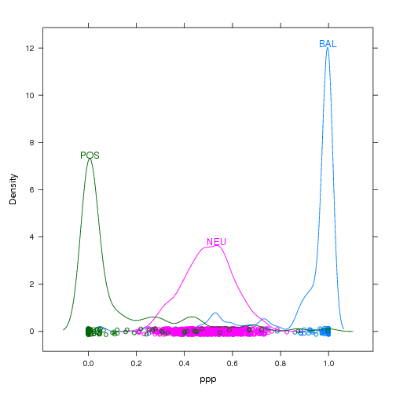
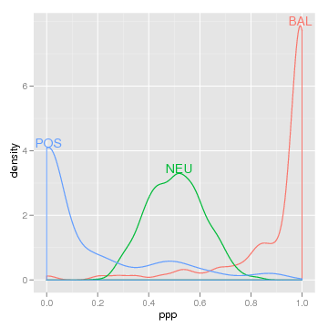

There are 2 major reasons why the directlabels package is so useful:
loci <- data.frame(ppp=c(rbeta(800,10,10),rbeta(100,0.15,1),rbeta(100,1,0.15)),
type=factor(c(rep("NEU",800),rep("POS",100),rep("BAL",100))))
|  |  |
Here's how we would go about making this plot in lattice without help from the directlabels package:
library(lattice)
## unlabeled lattice plot
dp <- densityplot(~ppp,loci,groups=type,n=500)
## we will add direct labels using this panel.groups function
label.densityplot <- function(x,group.number,col.line,...){
panel.densityplot(x=x,group.number=group.number,col.line=col.line,...)
d <- density(x)
i <- which.max(d$y)
ltext(d$x[i],d$y[i],levels(loci$type)[group.number],adj=c(0.5,0),col=col.line)
}
## update the lattice plot with the new panel.groups function
update(dp,panel=panel.superpose,panel.groups=label.densityplot)
As you can see, this is rather difficult using just plain lattice functions. It is also rather difficult in ggplot2:
library(ggplot2)
## ggplot2 with usual legend
dp <- qplot(ppp,data=loci,colour=type,geom="density")
## first we need to create a data frame of direct label positions
dens <- ddply(loci,.(type),function(l)
subset(data.frame(density(l$ppp)[c("x","y")]),y==max(y)))
## add the direct labels and hide the legend
dp+geom_text(aes(x,y,label=type,vjust=0),dens)+opts(legend.position="none")
The directlabels package greatly simplifies the code necessary for direct labeling. And it works the same with both lattice and ggplot2, try it! Several different (but equivalent) positioning methods are shown, in order to give you a better feel about how the system works. Each of the following will create the same direct labeled plot above.
install.packages("directlabels", repos="http://R-Forge.R-project.org")
library(directlabels)
## The Positioning Function can be any function of d the data, or a list as shown here
direct.label(dp,list(function(d,...)ddply(d,.(groups),subset,y==max(y)),vjust=0))
## Using dl.indep makes it simpler to define Positioning Functions
direct.label(dp,list(dl.indep(d[which.max(d$y),]),vjust=0))
## The built-in top.points function is exactly what we need for this
direct.label(dp,top.points)
## And by default direct.label uses top.points for density plots
direct.label(dp)
Each of these is significantly simpler than doing it by hand using lattice or ggplot2. Instead of several lines of code, you can almost always add your direct labels using just 1 line!
Back to directlabels home.